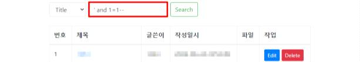

SI: 2. SQL 인젝션 (SQL Injection)
분류: Web Application(웹)
중요도: 상
개요
점검 내용
웹 애플리케이션 내 입력값이 SQL 쿼리에 삽입되어 비인가된 데이터베이스 접근과 조작 가능 여부 점검
점검 목적
웹 애플리케이션 내 SQL문으로 해석될 수 있는 입력값 허용을 차단하고 운영 중인 데이터베이스에 대한 비인가된 접근 및 조작을 방지하여, 데이터 무결성과 보안성을 확보하기 위함
보안 위협
해당 취약점이 존재하는 경우, 입력값이 SQL 쿼리에 삽입되어 데이터베이스에 비인가된 접근을 허용하며, 공격자는 민감 데이터의 조회, 수정, 삭제를 포함한 다양한 악의적인 행위가 가능하므로 입력값에 대한 특수문자 필터링을 구현해야함
참고
SQL 인젝션
사용자의 입력값으로 웹 사이트 SQL 쿼리가 완성되는 약점을 이용하여, 입력값을 변조해 비정상적인 SQL 쿼리를 조합하거나 실행하는 공격. 이는 개발자가 의도하지 않은 SQL문을 실행하게 하여 데이터베이스를 비정상적으로 조작하고, 민감한 데이터를 조회, 수정, 삭제할 수 있는 공격
참고
SQL 인젝션 공격 관련 코드 검토 필요
참고
소스코드 및 취약점 점검 필요
점검 대상 및 판단 기준
대상
웹 애플리케이션 소스코드, 웹 방화벽
판단 기준
✅ 양호: 임의로 작성된 SQL 쿼리 입력에 대한 적절한 검증을 통해 비정상적인 쿼리가 실행되지 않도록 하는 경우
❌ 취약: 임의로 작성된 SQL 쿼리 입력에 대한 검증이 이루어지지 않아 비정상적인 쿼리가 실행되는 경우
조치 방법
소스코드 내 SQL 쿼리를 입력값으로 받는 함수나 코드를 사용할 경우, 임의의 SQL 쿼리 입력에 대한 검증 로직을 구현하여 서버에 검증되지 않는 SQL 쿼리요청 시 에러 페이지가 아닌 정상 페이지가 반환되도록 필터링 처리하고 웹방화벽에 SQL 인젝션 관련 룰셋을 적용하여 SQL 인젝션 공격을 차단함
조치 시 영향
웹 서비스에서 사용하고 있는 명령어 및 특수문자가 필터링 되어 장애가 발생 될 수 있어 사전 영향도 및 코드 분석이 필요
점검 및 조치 사례
점검 방법
-
사용자 입력값 조건에 따른 참, 거짓 SQL 쿼리를 삽입하여, 응답의 변화(응답시간, 에러메시지, 응답 내용 등) 유무 확인

-
인증 페이지(로그인, 비밀번호 검증 등) 내 참이 되는 SQL쿼리를 삽입하여 우회 유무 확인
조치 방법
- SQL 쿼리 내 사용되는 문자열의 유효성을 검증하는 로직 구현
-
아래와 같은 특수문자에 대하여 사용자 입력값으로 지정 금지
문자 상세 설명 '문자 데이터 구분 기호 ;쿼리 구분 기호 --,#해당 라인 주석 구분 기호 /* *//*와*/사이 구문 주석 -
Prepared Statements를 사용하여 사용자 입력과 SQL 쿼리를 분리하여 처리
- 시스템에서 제공하는 에러 메시지 및 DBMS에서 제공하는 에러코드가 노출되지 않도록 예외처리
- 웹 방화벽(WAF)에 대하여 SQL Injection 관련 룰셋 추가
Java
SQL 키워드 및 특수문자 필터링 로직 예시
public static String sanitize(String input) {
if (input == null) {
return null;
}
// 특수문자 및 키워드들을 공백으로 치환
String[] sqlKeywords = {"SELECT", "UNION", "INSERT", "UPDATE", "DELETE", "DROP", "--"};
String pattern = "(?i)\\b(" + String.join("|", sqlKeywords) + ")\\b|['\"\\\\;()<>#/*!]";
Pattern regex = Pattern.compile(pattern + "|--");
Matcher matcher = regex.matcher(input);
return matcher.replaceAll(" ");
}
String sanitizedInput = sanitize(userInput);
Prepared Statement 사용 로직 예시
String sql = "SELECT * FROM users WHERE username = ?";
PreparedStatement preparedStatement = connection.prepareStatement(sql);
preparedStatement.setString(1, userInput);
ResultSet resultSet = preparedStatement.executeQuery();
적절한 예외 처리 예시
JDBC 표준 예외 클래스를 사용하여 다양한 데이터베이스 시스템에 일관된 방식으로 예외처리
try {
// 데이터베이스 작업
} catch (SQLException e) {
// 브라우저에 일반적인 오류 메시지를 반환
e.printStackTrace();
System.out.println("An error occurred. Please try again later.");
}
파라미터 바인딩
쿼리를 실행할 때, 쿼리 문자열과 사용자 입력값(파라미터)을 분리하여 처리하는 기법. 데이터베이스는 쿼리 문자열을 미리 파싱하고 컴파일하며, 쿼리 실행 시점에 파싱된 쿼리 문자열에 파라미터를 바인딩하여 데이터를 전달하므로 데이터베이스는 파라미터를 데이터로만 인식함
ORM(JPA-Hibernate) 파라미터 바인딩 사용 예시
public class ItemService {
@PersistenceContext
private EntityManager em;
public List<Item> findItemsByUserInput(String userInput) {
// JPQL을 사용하여 SQL Injection 방지
String jpql = "SELECT i FROM Item i WHERE i.itemID > :userInput";
Query query = em.createQuery(jpql, Item.class);
query.setParameter("userInput", userInput);
return query.getResultList();
}
}
SQL Mapper(Mybatis) 파라미터 바인딩 사용 예시
SQL Mapper(Mybatis) 내 ${} 구문의 경우 사용자 입력값이 SQL 구문으로 해석되기 때문에 파라미터 바인딩 (#{})을 사용하여 구현
<!-- 학생 정보 삽입 -->
<insert id="insertStudent" parameterType="com.example.Student">
INSERT INTO STUDENTS (NUM, NAME, AGE, GRADE)
VALUES (#{num}, #{name}, #{age}, #{grade})
</insert>
<!-- 학생 정보 삭제 -->
<delete id="deleteStudent" parameterType="int">
DELETE FROM STUDENTS
WHERE NUM = #{num}
</delete>
ASP.NET
정규표현식을 활용하여 SQL 키워드 및 특수문자에 대하여 필터링 로직 구현
SQL 키워드 및 특수문자 필터링 로직 예시
public static string Sanitize(string input)
{
if (input == null)
{
return null;
}
// 특수문자들을 공백으로 치환
string[] sqlKeywords = { "SELECT", "UNION", "INSERT", "UPDATE", "DELETE", "DROP", "--" };
string pattern = @"(?i)\b(" + string.Join("|", sqlKeywords) + @")\b|['""\\;()<>#/!*]";
return Regex.Replace(input, pattern, " ");
}
string sanitizedInput = Sanitize(userInput);
Prepared Statement 사용 로직 예시
string strQry = "SELECT count(*) FROM users WHERE userName = @username AND Password = @password";
using (SqlCommand cmd = new SqlCommand(strQry, cnx))
{
cmd.Parameters.Add(new SqlParameter("@username", SqlDbType.VarChar, 50) {
Value = txtUser.Text
});
cmd.Parameters.Add(new SqlParameter("@password", SqlDbType.VarChar, 50) {
Value = txtPassword.Text
});
int intRecs = (int)cmd.ExecuteScalar();
if (intRecs > 0)
{
FormsAuthentication.RedirectFromLoginPage(txtUser.Text, false);
}
else
{
lblMsg.Text = "Login attempt failed.";
}
}
적절한 에러 예외처리 로직 예시
catch (SqlException ex)
{
Logger.LogError(ex); // 로그 상세 에러 기록
// 사용자에게 일반적인 메시지 표시
lblErrorMessage.Text = "데이터베이스 작업 중 오류가 발생했습니다.";
}
ASP
적절한 에러 예외처리 예시
On Error Resume Next ' 에러 발생 시 계속 실행
If Err.Number <> 0 Then
' 에러가 발생한 경우
Err.Clear ' 에러 삭제 처리
%>
<script language="javascript">
alert("서버에 문제가 발생하였습니다. 잠시 후 다시 시도해 주세요.");
location.replace("[에러 페이지 경로]/login/login.asp?ba=search")
</script>
<%
response.end
End If
xp_cmdshell 비활성화 처리 예시
SQL Server의 xp_cmdshell 기능의 경우 SQL Server 2005 버전부터 기본적으로 비활성화 되어있음
sp_configure 'show advanced options', 1; -- SQL Server의 고급 옵션 활성화
GO
RECONFIGURE;
GO
sp_configure 'xp_cmdshell', 0; -- xp_cmdshell 비활성화
GO
RECONFIGURE;
GO
PHP
ereg_replace, eregi_replace 의 경우, PHP 5.3.0 이후 삭제되었으며, addslashes/magic_quotes_gpc의 경우 멀티바이트 문자 입력 시 우회의 가능성이 존재하므로 preg_replace를 이용하여 구현
SQL 키워드 및 특수문자 필터링 로직 예시
function sanitize($input) {
if ($input === null) {
return null;
}
// 특수문자들을 공백으로 치환
$sqlKeywords = ["SELECT", "UNION", "INSERT", "UPDATE", "DELETE", "DROP", "--"];
$pattern = "/(?i)\\b(" . implode("|", $sqlKeywords) . ")\\b|['\"\\\\;()<>#\/!*]/";
return preg_replace($pattern, " ", $input);
}
$sanitizedInput = sanitize($userInput);
Prepared Statement 사용 로직 예시
$sql = "SELECT * FROM users WHERE username = ?";
$stmt = $pdo->prepare($sql);
$stmt->execute([$userInput]);
$results = $stmt->fetchAll(PDO::FETCH_ASSOC);